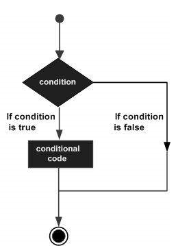
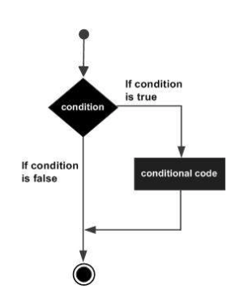
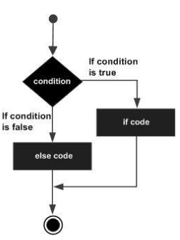
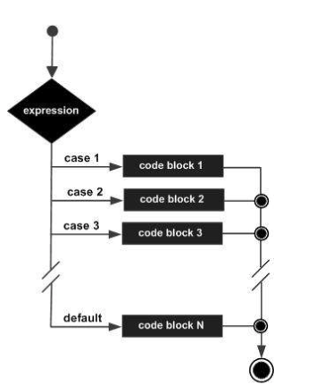
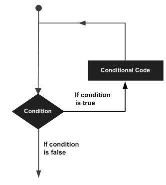
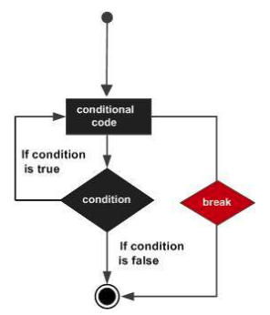
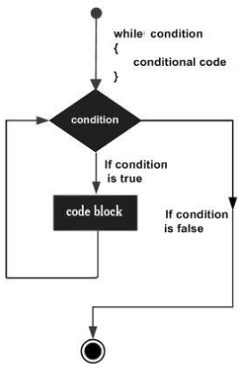
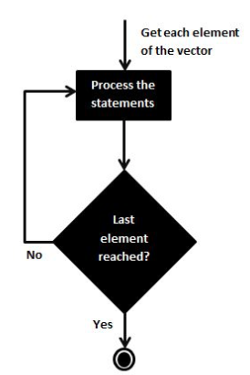
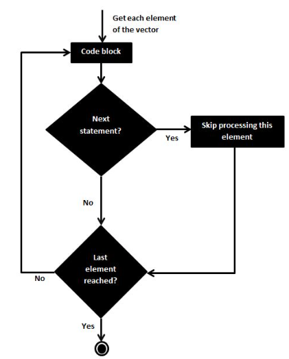

[1] 150[1] 122[1] 1336[1] 111[1] 58810/27/20
Data science is a “concept to unify statistics, data analysis, machine learning and their related methods” in order to “understand and analyze actual phenomena” with data.
Data science: It’s one of the most exciting and fastest-growing fields out there.
Data scientists bring value to all kinds of businesses and organizations.
Data science languages includes R, Python, Matlab, Julia and their libraries
R is a programming language and software environment for statistical analysis, graphics representation and reporting.
R was created by Ross Ihaka and Robert Gentleman at the University of Auckland, New Zealand.R made its first appearance in 1993.
R is a well-developed, simple and effective programming language which includes conditionals, loops, user defined recursive functions and input and output facilities.
R has an effective data handling and storage facility,
R provides a suite of operators for calculations on arrays, lists, vectors and matrices.
R provides a large, coherent and integrated collection of tools for data analysis.
R provides graphical facilities for data analysis and display either directly at the computer or printing at the papers.
“The R Workflow”
Write code to instruct R to perform the following computations:
Variables are reserved memory locations to store values.
Variables store information of various data types like character, wide character, integer, floating point, double floating point, Boolean etc.
Frequently used R objects:
Numeric data may include integer data, or whole numbers (88), and double data, or decimals (87.666667).
Example: 3 + 2i
Example : ‘a’ , ‘“good”, “TRUE”, ’23.4’
Example : “Hello” is stored as 48 65 6c 6c 6f
When you want to create vector with more than one element, you should use c() function which means to combine the elements into a vector.
A list is an R-object which can contain many different types of elements inside it like vectors, functions and even another list inside it.
A matrix is a two-dimensional rectangular data set. It can be created using a vector input to the matrix function.
While matrices are confined to two dimensions, arrays can be of any number of dimensions. The array function takes a dim attribute which creates the required number of dimension. In the next example we create an array with two elements which are 3x3 matrices each.
Factors are the r-objects which are created using a vector. It stores the vector along with the distinct values of the elements in the vector as labels.
The labels are always character irrespective of whether it is numeric or character or Boolean etc. in the input vector. They are useful in statistical modeling.
Factors are created using the factor() function. The nlevels functions gives the count of levels.
Data frames are tabular data objects. Unlike a matrix in data frame each column can contain different modes of data.
The first column can be numeric while the second column can be character and third column can be logical. It is a list of vectors of equal length.
Data Frames are created using the data.frame() function.
Creating variables requires two steps:
<-When naming variables in R, there are some rules to follow:
| Variable Name | Validity | Reason |
|---|---|---|
| var_name2. | valid | Has letters, numbers, dot and underscore |
| var_name% | Invalid | Has the character ‘%’. Only dot(.) and underscore allowed. |
| 2var_name | invalid | Starts with a number |
| .var_name,var.name | var.name | Can start with a dot(.) but the dot(.)should not be followed by a number. |
| .2var_name | invalid | The starting dot is followed by a number making it invalid. |
| _var_name | invalid | Starts with _ which is not valid |
The variables can be assigned values using leftward, rightward and equal to operator. The values of the variables can be printed using print() or cat() function. The cat() function combines multiple items into a continuous print output.
Given The Table
| Class | Exams | Homework | Projects |
|---|---|---|---|
| Math | 92 | 87 | 85 |
| Chemistry | 90 | 81 | 92 |
| Writing | 84 | 95 | 79 |
| Art | 95 | 86 | 93 |
| History | 77 | 85 | 90 |
| Music | 92 | 90 | 91 |
| Physical Education | 85 | 88 | 95 |
Refer to the table of class data to calculate your final grade in each of your classes:
Store the results of your analysis into variables and combine them to a variable final_scores
Using Variables Calculate gpa ( gpa = final_grades/7)
Use the mean() function to calculate your grade point average from the final_scores vector that we created earlier. Store the result of your calculation in the variable gpa.
Use the max() function to identify the highest final grade in the final_scores vector.
Use the min() function to identify the lowest final grade in the final_scores vector.
Use the length() function to calculate the total number of classes.
An operator is a symbol that tells the compiler to perform specific mathematical or logical manipulations. R language is rich in built-in operators and provides following types of operators.
We have the following types of operators in R programming −
+ Adds two vectors
- Subtracts second vector from the first
* Multiplies both vectors
/ Divide the first vector with the second
%% Give the remainder of the first vector with the second
%/% The result of division of first vector with second (quotient)
^ The first vector raised to the exponent of second vector
Each element of the first vector is compared with the corresponding element of the second vector. The result of comparison is a Boolean value.
(>)Checks if each element of the first vector is greater than the corresponding element of the second vector.
(<)Checks if each element of the first vector is less than the corresponding element of the second vector.
(==)Checks if each element of the first vector is equal to the corresponding element of the second vector.
(<=)Checks if each element of the first vector is less than or equal to the corresponding element of the second vector.
(>=)Checks if each element of the first vector is greater than or equal to the corresponding element of the second vector.
(!=)Checks if each element of the first vector is unequal to the corresponding element of the second vector.
It is applicable only to vectors of type logical, numeric or complex. All numbers greater than 1 are considered as logical value TRUE.
Each element of the first vector is compared with the corresponding element of the second vector. The result of comparison is a Boolean value.
(&)It combines each element of the first vector with the corresponding element of the second vector and gives a output TRUE if both the elements are TRUE.
(|)It combines each element of the first vector with the corresponding element of the second vector and gives a output TRUE if one the elements is TRUE.
(!)Takes each element of the vector and gives the opposite logical value.
The logical operator && and || considers only the first element of the vectors and give a vector of single element as output.
(&&)Takes first element of both the vectors and gives the TRUE only if both are TRUE.
(||)Takes first element of both the vectors and gives the TRUE if one of them is TRUE
These operators are used to for specific purpose and not general mathematical or logical computation.
(:)It creates the series of numbers in sequence for a vector.
This operator is used to identify if an element belongs to a vector.
This operator is used to multiply a matrix with its transpose
Decision making structures require the programmer to specify one or more conditions to be evaluated or tested by the program, along with a statement or statements to be executed if the condition is determined to be true, and optionally, other statements to be executed if the condition is determined to be false.
An if statement consists of a Boolean expression followed by one or more statements.
Flow Diagram
An if statement can be followed by an optional else statement, which executes when the Boolean expression is false.
Flow Diagram
 ## Example:
x <- c("what","is","truth")
if("Truth" %in% x) {
print("Truth is found")
} else {
print("Truth is not found")
}[1] "Truth is not found"A switch statement allows a variable to be tested for equality against a list of values.
Flow Diagram
A loop statement allows us to execute a statement or group of statements multiple times and the following is the general form of a loop statement in most of the programming languages −
Executes a sequence of statements multiple times and abbreviates the code that manages the loop variable. Flow Diagram
Repeats a statement or group of statements while a given condition is true. It tests the condition before executing the loop body.
Flow Diagram
Like a while statement, except that it tests the condition at the end of the loop body.
Flow Diagram
Loop control statements change execution from its normal sequence. When execution leaves a scope, all automatic objects that were created in that scope are destroyed.
Terminates the loop statement and transfers execution to the statement immediately following the loop.
The next statement simulates the behavior of R switch.
Flow Diagram
[1] "A"
[1] "B"
[1] "C"
[1] "E"
[1] "F"